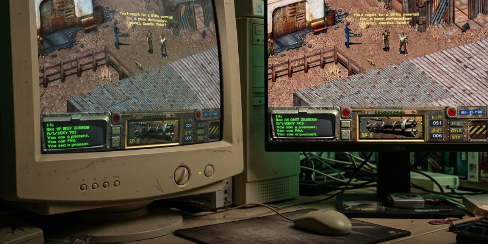

Geekotidien · Édition du 23 novembre 2026
Fallout 1 remaster HD
Un développeur solo remet à neuf le Fallout de 1997, sans version jouable

Un développeur solo réalise « Fallout HD Project », un remaster de Fallout 1 (1997). Le jeu garde la vue isométrique, les combats au tour par tour et le système de grille, avec un lifting graphique : environnements, éclairage, icônes et visages.
Le projet tourne sur le moteur open-source Fallout 1 CE, modifié. Selon le développeur, les règles, l'histoire et les cartes restent inchangées. Il partage son avancement sur le site officiel du projet.
Toujours selon le développeur, le projet est achevé à moitié et il n'existe pas de version jouable. Bethesda n'a jamais porté Fallout 1, ni Fallout 2, 3 ou New Vegas, d'après l'article. Les détails techniques viennent des déclarations du développeur, sans vérification indépendante.
Le + : Le projet reprend le moteur Fallout 1 CE, un moteur open-source.